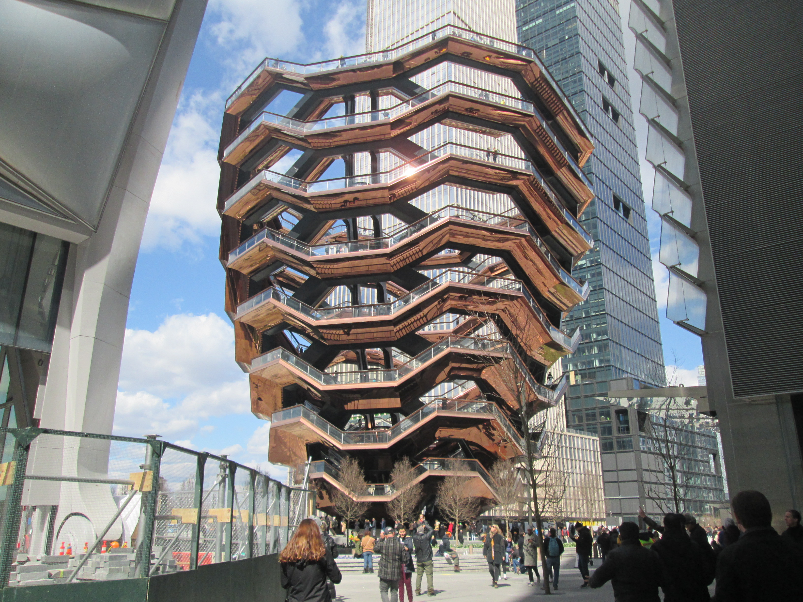

New York City
New York City is one of the most famous cities in the world. It is located in the United States and is known for its skyline, culture, entertainment, and global influence.
History
New York was originally founded by Dutch settlers in the 17th century and later became one of the most important cities in the United States. Over time, it developed into a global center for finance, media, and culture.
Culture
New York City is known for its diversity and vibrant lifestyle. People from many cultures live and work in the city, making it a unique and exciting place to visit.
Tourism
Tourism plays a major role in New York’s economy. Visitors travel from all over the world to explore its attractions, shopping areas, and entertainment.
Famous Places
Some of the most popular attractions in New York City include the Statue of Liberty, Times Square, Central Park, Empire State Building, and Brooklyn Bridge.
Gallery



New York City
| Country | United States |
| State | New York |
| Population | 8.5 Million+ |
| Famous For | Statue of Liberty, Times Square |
| Main Language | English |
| Best Time to Visit | April to June, September to November |